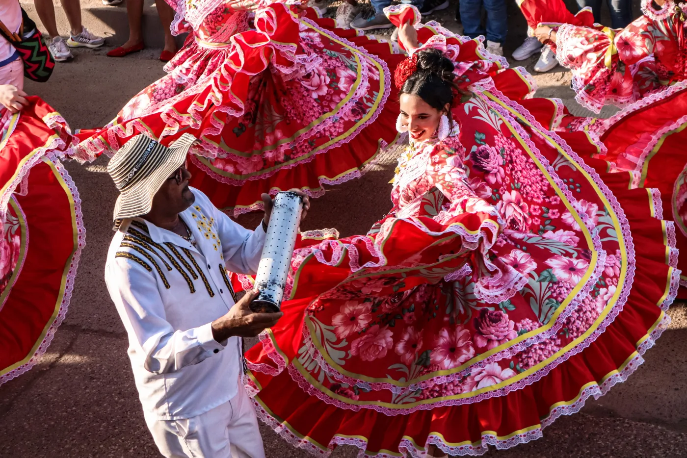
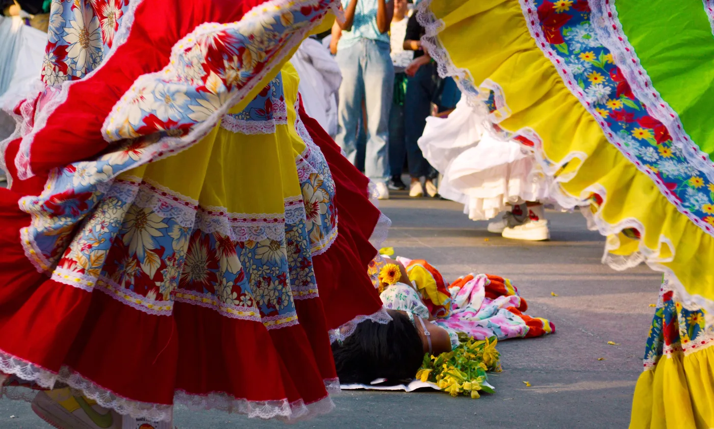

Palo Santo · Berlin
Colombian Caribbean music isn't one sound — it's a map of Afro-Colombian rhythms born out of resistance, blended across cultures, and still very much alive in every drumbeat. These are the rhythms Palo Santo, a Colombian band based in Berlin, brings to the stage.
Cumbia is Colombia's most iconic rhythm, and easily its most well-traveled. This piece of Colombian roots music grew out of a meeting of African drums, Indigenous flutes (gaita colombiana, caña de millo), and Spanish melody, and by the 20th century it had spread across Latin America. Every country put its own spin on it — cumbia villera in Argentina, cumbia norteña in Mexico, its own flavors in Peru and Venezuela — but the drum at its core never changed. That's the short version of cumbia's origin; the long version is basically Colombian history.
 Los Gaiteros de San Jacinto — "Fuego de Cumbia"
Los Gaiteros de San Jacinto — "Fuego de Cumbia"

© María Molina / Pexels · Juan de Acosta, Atlántico
Born in the palenques of Bolívar, Córdoba, and Sucre — communities founded by formerly enslaved people — bullerengue is first and foremost a women's song, a Colombian folk music tradition passed down voice to voice for generations. It comes in three "aires," or styles:
The slowest of the three, sung seated, with long, melancholic phrases.
 Tonada — "Sin ti no puedo vivir"
Tonada — "Sin ti no puedo vivir"
Quicker, full of leleos (onomatopoeic chants), made for celebration.
 Grupo Bahía — "Fandango de Lengua"
Grupo Bahía — "Fandango de Lengua"
 See all three aires — Etelvina Maldonado & Encarnación Tovar, Cartagena 1997
See all three aires — Etelvina Maldonado & Encarnación Tovar, Cartagena 1997
Voices like Totó la Momposina, Petrona Martínez (2021 Latin Grammy for Best Folk Album), and Etelvina Maldonado carried this tradition — and this Barranquilla Carnival music energy — from the courtyards of María la Baja and Puerto Escondido onto international stages, without losing its roots.

© Jessica Cardona Bijalba, 2023
We're a Colombian band based in Berlin, playing traditional Colombian dance music with a modern edge. Our setup runs on alegre drum, tambora, and gaita — real Colombian percussion — mixed with electric bass and guitar when the moment calls for it. Some nights we sound like a backyard party back home; other nights, like a Latin band in Berlin working a festival stage.
Cumbia, puya, mapalé, and bullerengue, played the way they should be: rooted in where they came from, free to go wherever we take them. We also bring porro into the set, and dip into champeta when the crowd wants something more contemporary — all part of the same Atlantic coast music tradition that raised us.
Looking to book a Colombian band in Berlin or across Europe for your next event, wedding, or festival? Palo Santo brings Caribbean music, live, wherever you need it.
Bullerengue is an Afro-Colombian song and dance tradition from Colombia's Caribbean coast, originally sung by women in communities founded by formerly enslaved people. It has three styles, or "aires": bullerengue sentao, fandango de lengua, and chalupa.
Cumbia originated on Colombia's Caribbean coast from a blend of African, Indigenous, and Spanish musical traditions during the colonial era, later spreading across Latin America.
Palo Santo plays traditional Colombian percussion — alegre drum, tambora, and gaita — alongside electric bass and guitar.
Yes — Palo Santo is available for bookings in Berlin and across Europe, including weddings, festivals, and private events.
Book Palo Santo
Available for festivals, clubs, cultural events and private bookings across Europe.
Get in Touch Toño Fernández — "La Chalupa"
Toño Fernández — "La Chalupa"